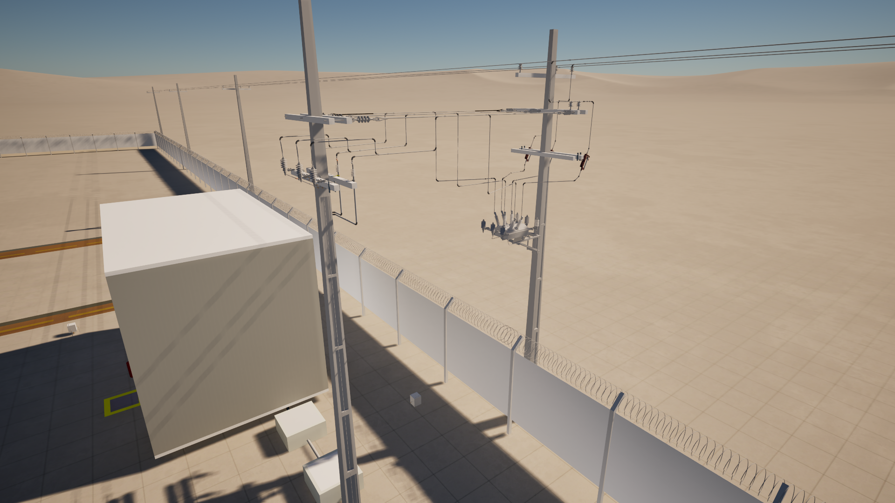
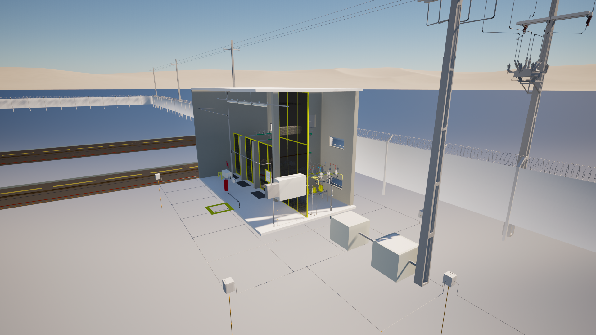

Este projeto foi desenvolvido para atender à conexão de uma usina solar fotovoltaica à rede de distribuição em média tensão, por meio de uma subestação abrigada com potência de 2 MVA e classe de tensão de 13,8 kV.
A solução contempla o arranjo elétrico da subestação, os cubículos de média tensão, o transformador de potência, o sistema de proteção, a medição, os circuitos de baixa tensão, o aterramento e a interface com a concessionária.
O projeto foi elaborado com foco em segurança operacional, confiabilidade, clareza executiva e conformidade com os requisitos técnicos aplicáveis à conexão de geração fotovoltaica na rede elétrica.

Esta vista apresenta a concepção geral da subestação abrigada, evidenciando a disposição dos principais equipamentos e a organização do ambiente técnico.
A representação permite visualizar a implantação dos cubículos, transformador, acessos operacionais, áreas de circulação e integração com os sistemas elétricos da usina solar fotovoltaica.
Uma subestação bem planejada garante segurança, eficiência operacional e maior confiabilidade ao sistema.

Os cubículos de média tensão foram previstos para realizar as funções de seccionamento, proteção, manobra e interface com a rede da concessionária.
O arranjo dos equipamentos considera a segurança dos operadores, a seletividade das proteções e os requisitos técnicos necessários para a conexão da usina solar ao sistema elétrico de distribuição.
O sistema de proteção em média tensão é essencial para garantir a segurança da conexão com a rede.

O transformador de potência é responsável pela interface entre o nível de tensão da usina fotovoltaica e a rede de média tensão da concessionária.
A especificação de dois cubículos de transformação com um transformador de 1,25 MVA em cada cubículo permite atender à potência de conexão prevista, garantindo operação adequada, desempenho elétrico e compatibilidade com os requisitos da instalação.
O transformador é o elemento central da conexão entre a geração solar e a rede elétrica.

O projeto foi desenvolvido para permitir a conexão segura da usina solar fotovoltaica à rede de média tensão, respeitando os critérios técnicos de paralelismo, proteção, medição e operação.
A integração elétrica considera a interface entre inversores, quadros de baixa tensão, transformador elevador, cubículos de média tensão e ponto de conexão com a concessionária.
Uma conexão bem projetada reduz riscos operacionais e facilita a aprovação junto à concessionária.

O sistema de aterramento e equipotencialização é fundamental para garantir a segurança das pessoas, dos equipamentos e da operação da subestação.
O projeto contempla a interligação das massas metálicas, barramentos de terra, estruturas, cubículos, transformador e demais elementos necessários para manter o sistema seguro em condições normais e de falta.
A segurança da subestação começa por um sistema de aterramento bem dimensionado.
Projeto desenvolvido para integração entre usina fotovoltaica e rede de média tensão.
Estudos e critérios técnicos para atuação coordenada dos dispositivos de proteção.
Integração entre equipamentos, ambiente construído, concessionária e execução em campo.
Memorial, diagramas, detalhes executivos e documentação para aprovação e implantação.
Análise da carga, potência da usina, ponto de conexão e requisitos da concessionária.
Definição do arranjo elétrico, proteção, transformação, aterramento e medição.
Desenvolvimento de diagramas, plantas, cortes, detalhes construtivos e memoriais.
Projeto técnico completo para aprovação, execução e apoio à implantação da subestação.
Desenvolvemos projetos de subestações, redes de média tensão, conexão de usinas solares, estudos de proteção, SPDA, aterramento e instalações elétricas industriais.
Falar no WhatsApp